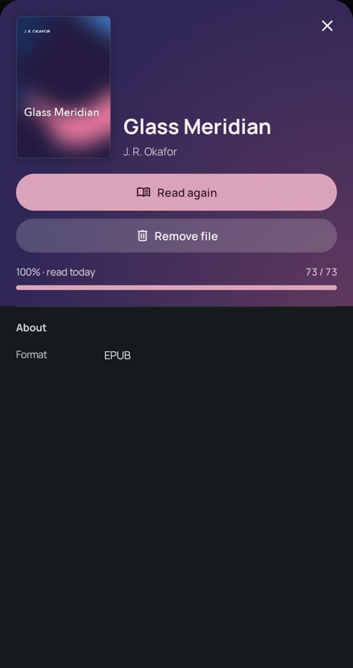
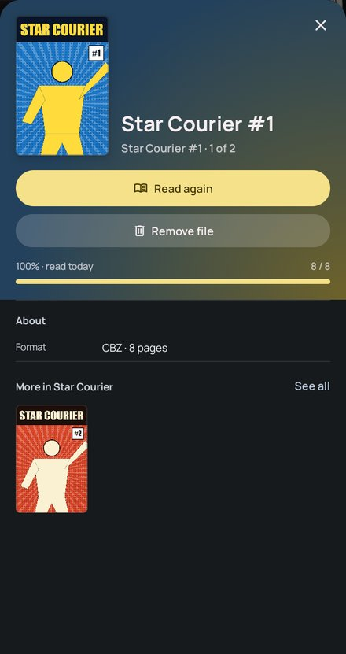
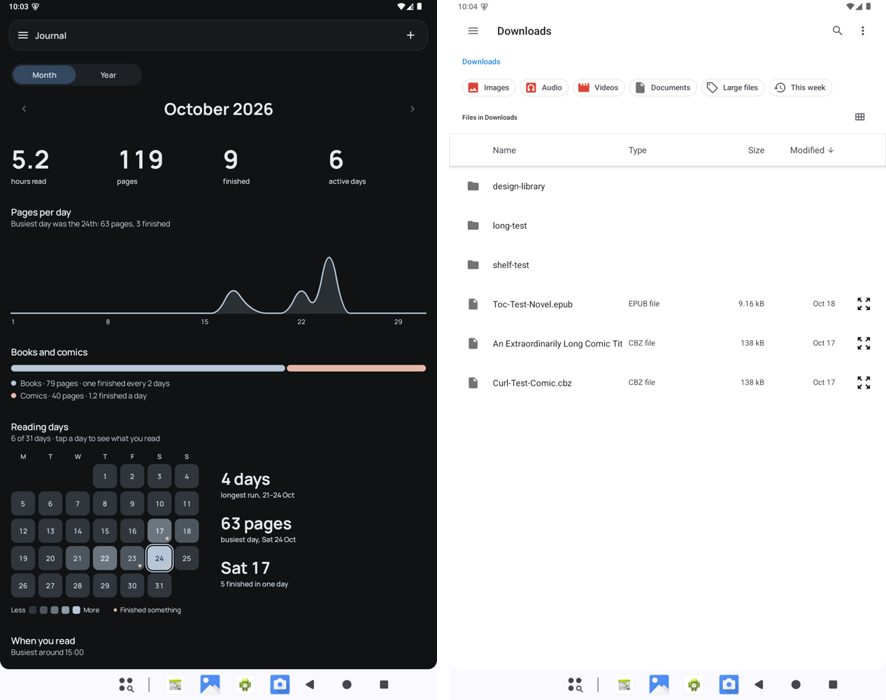

yabai · redesign plan 9.5 · board · 24 October 2026
The book page's “Your reading”
You picked Do for both review cards. The book page never shows what you thought of a book: Glass Meridian is rated 3.5 in the journal, read in 9 sessions between 21 and 24 October, and its page says "Format EPUB" and nothing else. "Remove file" sits under Read again with the same weight. And the journal's "+" opens a file picker. Card 1 picks where the section goes (the rest draw A). Pages are drawn at real sizes (1 px = 1 dp, scaled to fit) with Glass Meridian's cover colours. Picks save to this page.
0 of 5 picked
Picks are kept in this browser until the page's store answers.
What's there today (0.17.1 + 9.4, emulator, the Local library)

A finished, rated book: Read again, Remove file, then "Format EPUB".

A comic: the same, with "CBZ · 8 pages" and its series row.

The journal's "+" opens Android's file picker, an import.
The rating and note live in the journal (item_journal_entries, the rating in half stars), with the started and finished events and every reading session. The book page (feature:library) reads none of it; the app already keeps a light copy (AppUiState.journalSnapshot: events, sessions, entries).
9.1's star editor and private note are journal code, so the book page would take the section as a slot the app fills, not draw it itself.
About lists Format (with pages for comics), Language and Publisher when the book says. A local book has only its format; the date it was added is known but not shown.
1 · "Your reading": its own section, or inside the cover's colour
pick A or B
A. A section on the page under the top, headed like About.
B. Inside the tinted top under the progress bar, as on the Finished screen.
A keeps the top short and reads like the rest of the page; the stars take the cover's accent so they still belong to the book.
B makes the top the book's whole story (where you are, what you thought), the way the Finished screen looks; the top grows by about 150 dp, pushing About and the rows down.
2 · What the section holds, from the journal
feature:journal slot
Finished and rated, no note yet.
Being read, a note written, not rated.
Never opened: no section.
The stars are 9.1's editor ("Your rating", the hint at the end, 40 dp stars in the cover's accent): a tap rates and saves, a tap on the left half gives a half.
The note: "Add a private note" opens the field, as on the Finished screen; a note already written shows as text with Edit. It saves when you leave the field or close the page.
"Started 21 Oct · Finished 24 Oct" from the journal's events ("Started 21 Oct" alone while reading), and "9 sessions · 8 min".
It shows once a book has been opened or rated. Read again stays the top button once a book is finished, as today.
3 · About says what the file knows
LibraryBookPageModel
An EPUB that has been opened, and a comic.
Chapters for an EPUB, once the reader has counted them ("6 chapters"); pages for a comic and a PDF, as today, on their own row.
Added: when it came into the library ("21 Oct", with the year when not this one), for local books and server books alike.
The series and issue number stay in the top block's series line ("Star Courier #1 · 1 of 2"), not repeated here.
4 · Remove moves to a quiet row at the end
LibraryBookPage
The end of a local book's page.
"Remove from library" in the error colour, a 48 dp row with the bin icon, after About and the rows of books. It keeps its confirm dialog and the toast after.
A downloaded server book gets "Remove download" there too, in the text colour (its toast has Undo); Download and Mark finished stay at the top beside Read again.
The top then holds only what you read with: Continue or Read again, and Mark finished / Download where the book has them.
5 · The journal's bar loses its "+"
JournalTopBar
The journal's bar, today and without the "+".
Importing stays where it belongs: the library's "•••" menu, its empty state and the first launch.
The bar keeps the menu button and the journal's name.